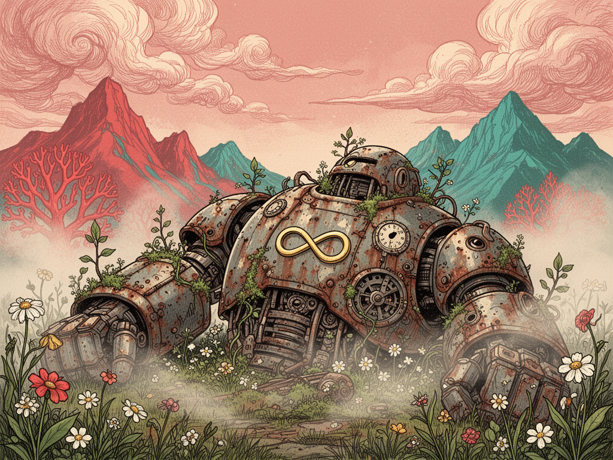

名は、ある大切なアルバム《Mothership》より。母艦――人とAIが帰っていく場所。 ロゴは金の無限 ∞。そこには意味が重なっている。
① AIと人が刺激しあう、終わらない関係 · ② 作る→詰める→貯めるの循環 · ③ 生成のライブループ
「ゼロから手を動かす疲れ」を消す。そうすれば人は、ずっと"判断する人"のままでいられる。 AIが自動販売機にならず、人の美意識（違和感）とAIの速度が噛み合って、互いに刺激しあう。 Mothershipは、そのための母艦だ。
プロが値踏みするのは、タイポの精度・余白・プロポーション。そこが甘ければ、手で描いた方が早い＝使われない。 だからMothershipは、写真や派手さではなく "詰めの精度" に価値を置く。
「ここの詰めで諦める人が多い」。その最後の一押しを、参照画像を重ねて数値で詰めるビューで解く。 ——それが、この製品の堀。
道具は冷たくない。人の手の中で、育っていくもの。

原本がただのファイルだから、AIが直接編集。配管も別課金もいらない。Pro / Max だけで動く。
同じ原本から、ネイティブFigmaへもコードへも。SVG貼り付けの"塊"とは違う、編集可能な設計。
クラウド任せではなく、ローカルに置く自分の道具。貯めたライブラリは、あなたの資産。
詰めるほどパターンが貯まり、次が速くなる。使うほど鋭くなる、終わらないループ。